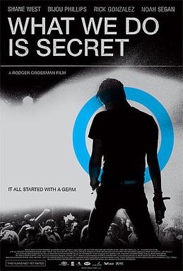

Rodger Grossman
2007
92 minutes
TITLE: What We Do Is Secret TEXT PLACEHOLDER 214
You're going to watch this one after letting your Tubi or whatever play for too long and start the next recommended movie after playing the previous one. Tubi figured out that you like Punk music, so it won't stop recommending this Germs biopic to you. You usually don't like biopics but the movie started and they're playing one of your favorite Germs tracks on the opening credits and you are just rolling with it.
One of the key parts of the Germs mythos (which is portrayed in this film and in The Decline of Western Civilization, if memory serves you well) is the concept of the Germs burn. Darby Crash, who was idiotically self-destructive, would burn his wrist with cigarettes on occasion. There was a bit of mythos about this where for hardcore Germs fans, Darby would put out his cigarette on someone else's wrist, and then they would have a "Germs burn" that they could pass on to another person. It was like a stupid self-harm version of Six Degrees of Kevin Bacon or the Erdős Number for mathematicians. This of course had a bit of a bastardization where you could also just do this for yourself if there weren't any other Germs fans to do it for you, sort of like a layman doing last rites.
This seemed like a dandy idea to you as a young idiot. You were already doing self-destructive shit like that during some of your own depressive jags as a way of coping. Sometimes a quick burst of pain would be a good way to kick whatever self-preservation instinct was still rattling around inside your dried-out carcass of a psyche into gear. The whole Nine Inch Nails "I hurt myself today to see if I still feel..." nonsense. You put out a good amount of cigarettes and matches on your wrists and arms over the years while feeling like shit. It was therapeutic and relatively harmless. Usually it would be matches, which were less likely to leave a mark and healed cleaner when they did. Plus you were too cheap to waste any of a cigarette during the brief period where you smoked. You didn't even like getting filtered cigarettes since it seemed like a scam and a waste. You were a self-destructive punk idiot, but at least you were a frugal one.
Time to choose something different: